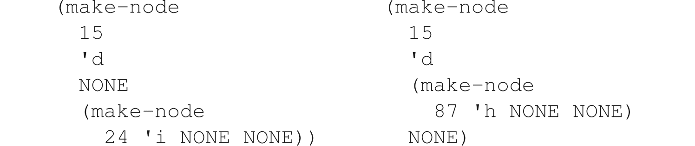
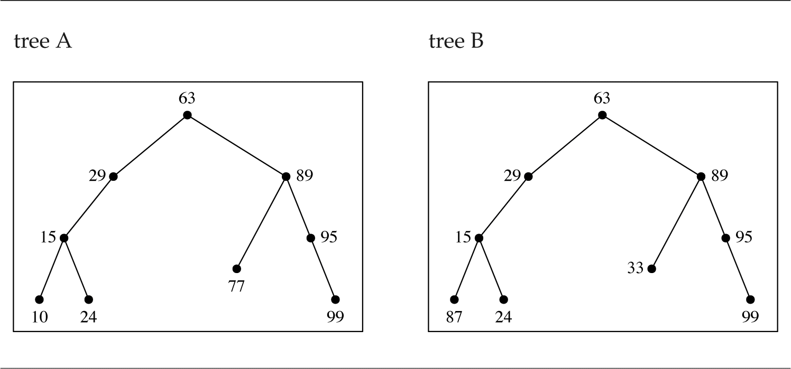
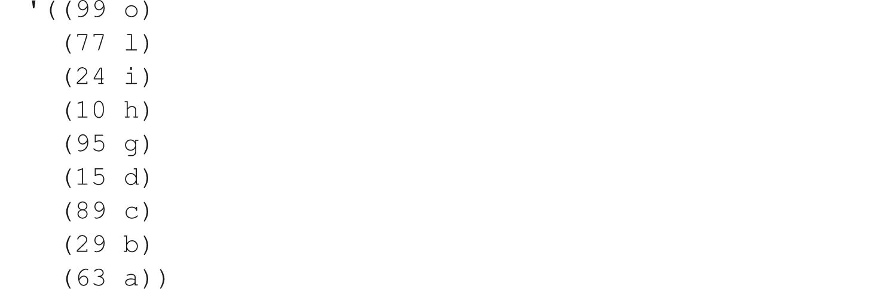

19.5 Project: BSTs
Programmers often work with tree representations of data to improve the performance of their functions. A particularly well-known form of tree is the binary search tree because it is a good way to store and retrieve information quickly.
To be concrete, let’s discuss binary trees that manage information about people. Instead of the child structures in family trees, a binary tree contains nodes:
(define-struct no-info [])
(define NONE (make-no-info))
(define-struct node [ssn name left right])
; A BT (short for BinaryTree) is one of:
; -- NONE
; -- (make-node Number Symbol BT BT)
The corresponding data definition is like the one for family trees with NONE indicating a lack of information and each node recording a social security number, a name, and two other binary trees. The latter are like the parents of family trees, though the relationship between a node and its left and right trees is not based on family relationships.
Here are two binary trees:

Figure 119 shows how we should think about such trees as drawings. The trees are drawn upside down, with the root at the top and the crown of the tree at the bottom. Each circle corresponds to a node, labeled with the ssn field of a corresponding node structure. The drawings omit NONE.

Figure 119: A binary search tree and a binary tree
Exercise 322. Draw the above two trees in the manner of figure 119. Then design contains-bt?, which determines whether a given number occurs in some given BT. 
Exercise 323. Design search-bt. The function consumes a number n and a BT. If the tree contains a node structure whose ssn field is n, the function produces the value of the name field in that node. Otherwise, the function produces #false.
Hint Consider using contains-bt? to check the entire tree first or boolean? to check the result of the natural recursion at each stage.
If we read the numbers in the two trees in figure 119 from left to right, we obtain two different sequences:
The sequence for tree A is sorted in ascending order the one for B is not. A binary tree of the first kind is a binary search tree. Every binary search tree is a binary tree, but not every binary tree is a binary search tree. More concretely, we formulate a condition—or data invariant—that distinguishes a binary search tree from a binary tree:
The BST Invariant
A BST (short for binary search tree) is a BT according to the following conditions:
• NONE is always a BST.
• (make-node ssn0 name0 L R) is a BST if
– L is a BST,
– R is a BST,
– all ssn fields in L are smaller than ssn0,
– all ssn fields in R are larger than ssn0.
In other words, to check whether a BT also belongs to BST, we must inspect all numbers in all subtrees and ensure that they are smaller or larger than some given number. This places an additional burden on the construction of data, but, as the following exercises show, it is well worth it.
Exercise 324. Design the function inorder. It consumes a binary tree and produces the sequence of all the ssn numbers in the tree as they show up from left to right when looking at a tree drawing.
Hint Use append, which concatenates lists like thus:
(append (list 1 2 3) (list 4) (list 5 6 7))
==
(list 1 2 3 4 5 6 7)
What does inorder produce for a binary search tree?
Looking for a node with a given ssn in a BST may exploit the BST invariant. To find out whether a BT contains a node with a specific ssn, a function may have to look at every node of the tree. In contrast, to find out whether a binary search tree contains the same ssn, a function may eliminate one of two subtrees for every node it inspects.
Let’s illustrate the idea with this sample BST:
(make-node 66 'a L R)
If we are looking for 66, we have found the node we are looking for. Now, if we are looking for a smaller number, say 63, we can focus the search on L because all nodes with ssn fields smaller than 66 are in L. Similarly, if we were to look for 99, we would ignore L and focus on R because all nodes with ssns larger than 66 are in R.
Exercise 325. Design search-bst. The function consumes a number n and a BST. If the tree contains a node whose ssn field is n, the function produces the value of the name field in that node. Otherwise, the function produces NONE. The function organization must exploit the BST invariant so that the function performs as few comparisons as necessary.
See exercise 189 for searching in sorted lists. Compare!
Building a binary tree is easy; building a binary search tree is complicated. Given any two BTs, a number, and a name, we simply apply make-node to these values in the correct order, and voilà, we get a new BT. This same procedure fails for BSTs because the result would typically not be a BST. For example, if one BST contains nodes with ssn fields 3 and 5 in the correct order, and the other one contains ssn fields 2 and 6, simply combining the two trees with another social security number and a name does not produce a BST.
The remaining two exercises explain how to build a BST from a list of numbers and names. Specifically, the first exercise calls for a function that inserts a given ssn0 and name0 into a BST; that is, it produces a BST like the one it is given with one more node inserted containing ssn0, name0, and NONE subtrees. The second exercise then requests a function that can deal with a complete list of numbers and names.
Exercise 326. Design the function create-bst. It consumes a BST B, a number N, and a symbol S. It produces a BST that is just like B and that in place of one NONE subtree contains the node structure
(make-node N S NONE NONE)
Once the design is completed, use the function on tree A from figure 119.
Exercise 327. Design the function create-bst-from-list. It consumes a list of numbers and names and produces a BST by repeatedly applying create-bst. Here is the signature:
; [List-of [List Number Symbol]] -> BST
Use the complete function to create a BST from this sample input:

The result is tree A in figure 119, if you follow the structural design recipe. If you use an existing abstraction, you may still get this tree but you may also get an “inverted” one. Why?